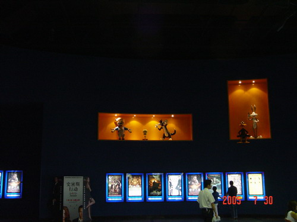
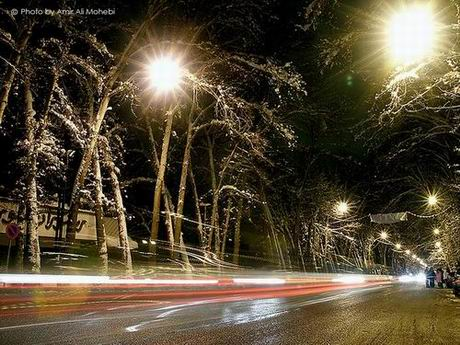
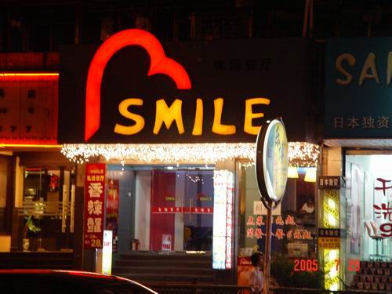
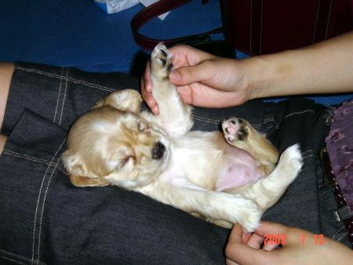
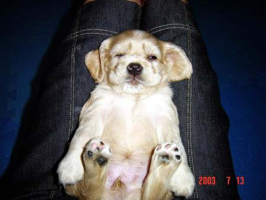
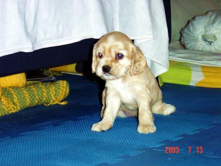
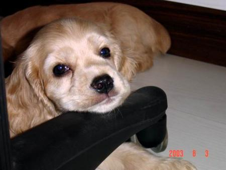
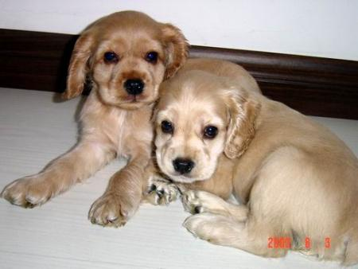
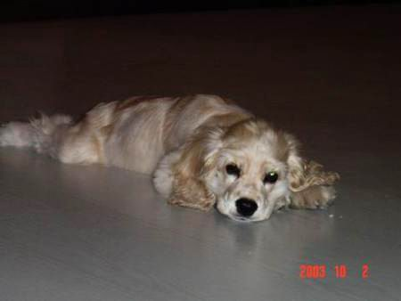

Archives : 2005-07
周六 @ Jul 31, 2005



To feel a bit cold in this hot summer @ Jul 27, 2005
by Amir Mohebi
Minolta Dimage 7i (Digital)

heart @ Jul 27, 2005
生病看医 @ Jul 21, 2005
因为这样那样的事情，我们得以有机会接触到各个层面的社会。
家人到上海某权威医院看专家门诊，也许全国各地来看病的人太多，前半夜便有人开始排队等号，医院早晨6点发号，当天只有15个号，没拿到号的病人继续等待下次专家门诊时间。
我们找的医师助理写了张条子去找住院部管事的人，那人说：“他不知道我们这里没床位了吗？”朋友拿着条子返回途中遇见了医院某主任，说明情况后两人一起又折回住院部，床位终于有着落了。
住院的大多50、60岁老人，病人的亲属象盲流一样被医院护士驱赶出去。每个床位只配有一把木椅子，有些看护病人的亲属就用椅子拼起来盖个床单晚上睡在那里。住院后，没有医院的人来询问没人管，过了很长时间来了一个护士问了病人姓名，写了卡片插在床位上。接下来几天不管需要不需要，病人要做遍所有的常规检查，得肺病的也去做个脑CT，800元交医院创收了。
请帮忙的医生吃饭，他们谈论最多的就是“效益、效益...钱、钱...”家里有钱的病人可以在医院里多看看，没钱的就等死。医院和病人完全是钱的关系、利益的关系！那些农村去看病的外地人被白衣天使训斥来训斥去，病人们没有半点怨言，医生简直就是他们的救命稻草！受点气或私下给医生送点钱与宝贵的生命相比又算得了什么呢。
在国内，到底什么程度可以取得医师资格？一个1998年6月26日九届全国人大常委会第三次会议通过的《医师法》，到了2005年是否有置后问题？这些医师的道德人品素质究竟是以什么来衡量和测评？一个真正的医生，首先是否需要具备高尚的人格和善良的心灵！！！我们都有过在门诊看病时四周簇拥着众多好奇听众的经历，病人没有隐私权。进了医院，病人好似屠宰厂流水线上的猪肉，那时作为一个病人是否还需要一点尊重和个人的尊严？由此想到我们的官员，公务员......面对现在的社会环境，我们能做什么？也许，什么也做不了！现在的社会不再谈理想、梦想、愿望，而改为说“欲望”，有媒体总结中国人N个欲望排行，欲望...多么可怕的词！

看一下国外的医疗体制
英国：1、医疗作为社会福利由政府提供给国民，政府承担费用；2、医疗设施绝大多数为公立。
日本、加拿大、瑞典、法国等：1、医院运营和医生从业的模式以民间为主，但以行业组织进行管理，保证医生和医院的合格和规范；2、政府将医疗服务作为确保项目提供给全体公民，医疗费用大部分由政府负担。
美国：1、医疗体制以私立为主，医疗消费以个人为主；2、政府提供部分医疗保障机制和资金，主要确保老年、病残、穷困或失业人口的就医。
瑞典：不管你是襁褓中的婴儿，还是年届古稀的老人，都平等地享有免费医疗的福利。医院则强调医务人员创造性的工作，但每位医生一天医治的病人数却是固定的，决不多加号。
北欧国家瑞典是著名的高福利、高税收国家。每位瑞典公民和拥有瑞典长期居留权的人，均可享受这些待遇，包括领取三种津贴：医疗费津贴、病假津贴和双亲津贴。这保证了全民福利制度的实施。每个人第一次就医时都会得到一张全国通用的就医卡，上面标明你历次的就医费用。治疗费、住院费，甚至包括特殊情况往返医院或诊所的路费等则享受全免。如果你因病不能正常工作，还可享受病假津贴，用于弥补患者因病而减少的收入损失，相当于正常收入的80％。孕妇产前可领取50天的妊娠津贴，产后领取12个月的双亲津贴。
在这里，生病了你不仅不需为费用担心，而且也不用担心医院里会有特殊的气氛让人紧张。除了就医环境充满人情味外，这里的服务人员，从护士到医生，总是笑脸相迎，笑脸相送，不厌其烦地向你解释你需要何种诊疗，让你有全面的了解和充分的心理准备。
不过在瑞典看病一定要有耐心。每次看病都要预约，如果你直接上门，除非急诊，经常会看不成病不得不回去。因为每位医生一天医治的病人数是固定的，决不多加号，这是他们的权利。
美国：因为改善治疗环境能达到让患者放松、让医务人员有干劲儿、让医院省钱的三赢格局，医院”美容风”正在各医院间流行。近几年，美国许多医院在提高医疗水平的同时，还格外重视改善硬件设施的视觉形象。不少医院对老建筑进行重新装修，对新建筑设计阶段就加入了”人情化”的内容。
smile~~ @ Jul 21, 2005

这是怎样的一个七月？ @ Jul 19, 2005
悲哀弥漫，在黑夜降临前。
晚饭后不知不觉到了白下区大阳沟，路标指着一条深深的巷子，低矮的平房和着陈旧的老式建筑，无声地沉寂在一片混沌的灯光下，巷子两侧临路开立的各式店铺杂乱无章，越来越接近巷子中部时，心情就象一条渐渐沉入水中的小船无望而无奈。问了许多人都没见过什么侏儒和可卡犬。寻着夜色中的犬吠走过去，大声呼喊着妞妞的名字，一只黑色的大耳朵短毛犬呼呼地在我身后喘着粗气，它生活的小院子没有灯光没有主人的声音，忠诚的它蹲在铁门后面望着陌生的我，象往常一样我叫了声“嘿，宝贝。”
与丢失的妞妞相比还有许多更为重要的事情需要关心与关注，比如亲人身体的健康，比如生活状态......这些却也是我们无法控制的，当我们无法解释生命的开始与终结时，“命”也许是最容易找到的解释！今天，亲人在上海住院检查，没有最后确诊就仍然有一线侥幸存在！说同病房一对黄山来的年轻夫妇，丈夫被诊断是食道癌，住进病房后夫妻两呆坐在病床上半小时无语......
下午，无意中将一杯茶水打翻在办公桌上，浸湿了一些文件......
上苍，给我们安排了怎样一个七月？
妞妞丢了~~ @ Jul 18, 2005
妞妞还在娘胎里时我们就在等待她的到来，两岁零一个月零3天，妞妞就那么不声不响的在7月14日早晨丢失了。在我内心有着不为人知的自责。全天工作的我还尚能应付幼小的它，当它一天天长大需求越来越多时，我们已应付不了对它的所有责任。于是我父母那里成了“托儿所”，每到周末接妞妞回来相聚，我父母也把它当作宝贝来宠。它走丢后一家人这几天心里都不舒服......
14日分发给同事一些带照片的寻狗告示，请他们带回各自居住的地方张贴，当天晚上又和GOGHS大街小巷的贴这些告示，也许这是我们唯一可以做的了。16日晚上居然真的接到一个自称是南京市歌舞团张姐的电话，说妞妞在她那里，不过是演《封神榜》里的那个侏儒捡到的，名字叫陆灯，山东青岛人。当时我便提出去接妞妞，并会酬谢。对方却说当晚要在大桥南路某酒店演出，约我第二天中午在某小区的街心花园碰面。酬谢的方式是要求我抱一下这个侏儒，称此侏儒只有两岁小孩那么高，30岁不到的年纪，喜欢被人抱起来，我当场答应下来。既然是南京市歌舞团的，我说了一个人的名字，张姐连说认识，歌唱的不错，此人同台演出的时候还喜欢抱这个侏儒......电话中标准的普通话和彬彬有礼的说话方式无不让我信服，我的妞妞就要回家了！这是多么令人欢欣雀跃的消息啊~
16日晚，从歌舞团、公安局的朋友那里反馈回来的消息坚定了之前的怀疑。电话是从白下区大阳沟打过来的，歌舞团根本没有陆灯这个人，全南京市登记在档的也就十几个陆deng，其中只有一个与陆灯这个名字相符，却也是正在读大学的正常人。警察朋友说90%是骗子，你要想要你的狗多带几个人去。
17日，抱着一线希望，我们全家以及父亲的朋友在家中等待张姐的电话。一天下来音讯全无。
我们希望妞妞能在一个好人家里生活，如若落在某些人手中必然会让它不停的繁殖，然后卖掉它的孩子去赚钱。妞妞丢了之后，爸爸更不敢多看它的照片，姨娘说到妞妞就流泪，邻居家阿姨见着我说：“多好的狗狗啊，丢了之后我心理好难过。”不想去多想这些难过的怀疑，仍然在等待妞妞的消息，期望它有好运，真的能够被好心人送回来~~
刚出生的妞妞和它的兄弟姐妹们

满月



2个月（右一）



4个月



6个月大

成年

《无间访》采访方兴东先生 @ Jul 11, 2005
听见客厅电视里正在采访方兴东，急忙跑过去看......哦，原来长得那般文弱书生样，旅游卫视频道的主持人是一个99年上大学的女孩，嘴唇上闪烁着水润光泽，书生的头像旁标注着博客中国的董事长CEO。
当我的CHINESE TEA建立四个月之后，由IT分析家方兴东先生于2002年8月发起了博客中国（www.blogchina.com,全球第一博客门户）成立，内容涵盖科技、新知、生活等方方面面，立足于高端，注重思想性和知识性；同时面向全球中文网民提供优质的免费博客托管服务。方兴东先生认为博客是网络的未来，博客使网民从被动消费变为主动创造。2002年中国大陆玩博客的人还不是很多，现在提到当时的某某某，多少有些许熟悉亲近感。
深夏水榭 @ Jul 11, 2005
这几日的南京因为下雨的缘故，凉快了许多，最高温度从37度降到30度左右。难得无雨的周日，外甥女在树人学校参加完分班考试，家人一行四人在沸腾鱼乡吃过午饭，下午闲逛至东郊~~


等待足部按摩

nothing left to say @ Jul 09, 2005
 第一次到那所校外院落停车，门卫询问了几个问题我一一作答，没想到停下车后门卫吵吵嚷嚷的又追过来询问刚才的问题，再次回答他，接着门卫便开始抱怨学员的车停的太多......奇怪，如果不让学员的车停，这么多车难道是翻墙停进来的吗？从他口中激情四射地蹦出许多鸟语，让人衔接不出完整的意思，无法明白他究竟是否让我停车？或许他自己也不清楚答案，那种喋喋不休的自我陶醉，我在菜场卖菜的大婶脸上看到过，一点不陌生。
第一次到那所校外院落停车，门卫询问了几个问题我一一作答，没想到停下车后门卫吵吵嚷嚷的又追过来询问刚才的问题，再次回答他，接着门卫便开始抱怨学员的车停的太多......奇怪，如果不让学员的车停，这么多车难道是翻墙停进来的吗？从他口中激情四射地蹦出许多鸟语，让人衔接不出完整的意思，无法明白他究竟是否让我停车？或许他自己也不清楚答案，那种喋喋不休的自我陶醉，我在菜场卖菜的大婶脸上看到过，一点不陌生。
“如果你有什么问题，我会转告学校老师，让他们和你的单位协调。”
门卫却仍然不停叫嚷吵闹着。“我不想和你吵架，我马上打电话叫老师来和你谈。”
在我看来门卫需要的不过是几个献媚的表情和讨好的说辞，如果你能稍微感“恩”一番，那么他会更开心。一个夜晚值班的门卫，是否过于寂寞？没有人聊天，没有人敬烟，没有好茶好酒好环境......看着人来车往，一切都没他什么事，他怎能停留在一个安静冷漠的世界中呢？这种境遇也许能将肩上那点责任膨胀成一根具备非凡魔力的权杖？！不过另一种解释用南京话来讲是“十搭，骨子里的贱骨髓导致他不龌龊一把将今夜难眠，恰恰遇上了我这般倔强不识人情世俗的......那一刻，我和他都挺不幸的！
这世上有各式各样的人群，过去我一直存有的同情心，现在已完全改变。
也许社会过于忽略他们，不被关注，但一个不起眼的机会他们也能不加思索地展现曲折心态，好比城市协管员殴打平民百姓的行为......社会四处无奈，也只能如此了。对此，谅解会显得善良些，然而善良将助长他擅长的方式。
有朋友曾经说过这么一句话：“他们没什么可同情的，因为他们坏起来比动物还凶猛。”
Swarovski @ Jul 08, 2005
面对汽车超市里千篇一律的配件及饰品，似乎没什么兴趣。最终选了Swarovski的两个小饰品，准备放在前面的操控台上，配上深色内饰应该是不错的选择。其实让自己开心的方式有很多......
《神话》首映中金喜善说：“女人是喜欢被疼爱的，有个男人爱她，这个男人长的还行、个子高点、有点幽默感，人品不错，吃饭买单，有时间陪她，那么就值得女人去爱了。”想想其实女人挺好哄的，但是有些男人就是不会这么做，为什么呢？
晚上要开始上课啦。
写于昨晚 @ Jul 06, 2005
每到周末和夜晚，TE CINESE网站在神话科技公司租赁的服务器就登陆不了，为了同一个问题拨打他们的服务电话三次，这也只是让我清楚的知道400元在中国只能买到这种服务和服务态度。面对这种状况让我们发扬一下阿Q精神吧。
晚上买了几张碟，心浮气躁的状况是听不到好碟的，有些怀念过去听碟的心情。今晚需要严肃音乐和古典音乐，即使这两种类型的音乐对于我是那么陌生，我却迫切的需要听这种旋律，体会这种感受。想要抛弃流行音乐的心态，是否可以避免对这个时代新事物的牵挂和不安？有时，真的厌倦了牵挂。
我把那些新买的碟安插在汽车更换下来的CD档位上，缓速前行，比起那些人，我更愿意与音符亲近。
平安是福 @ Jul 04, 2005
如果有什么想不开的，去火葬场看看吧。
昨天上午去十字岗的殡仪馆参加朋友父亲的葬礼。几年前外婆外公在那里的葬礼又依稀出现在眼前，外公外婆是忠实的烟民，而外婆外公及朋友的父亲都因为肺癌去世！
朋友的父亲是师长，棺木上盖着党旗，比平常人的葬礼看着要更加庄严肃穆。他们父母感情很好，他的妈妈哭的泣不成声，在场的人无不难过而无奈。之后亲人在焚化炉内火化，家属在外等候......生和死，几步之遥，既自然又和谐的共存。死，在活得精疲力尽的时候对于去了的人是一种解脱！
没想到会在殡仪馆遇见干哥，好些年没见到他，不是他叫我，一眼真认不出来瘦得变形的他。干哥的父亲去世，也是同一天在那里火化，他是长子走在亲属队伍的最前面，穿着白衬衣黑裤子黑皮鞋，面容憔悴...哎...我的心里真有说不出的滋味......外婆也是7月去世火化的，据说好些老人熬不过7月（夏天）......朋友说了一句：厚养薄葬。
下午我们俩直接开车去了栖霞寺，请了一柱高香，为我们的双亲祈求平安。天气热得人皮肤要燃烧起来似的，他就一直站在太阳下看着那柱高香充分的燃烧......为了我们共同的愿望祈求平安！
寂寞空旷 @ Jul 02, 2005
 有人说一个农民一生三件大事：盖房子、娶媳妇、生孩子。城市人呢？钱和性？钱衍生出房子、车、生活品质和职业，性联系着爱情、感情和生育。城市人还能活出别的花样吗？其实，都差不多。
有人说一个农民一生三件大事：盖房子、娶媳妇、生孩子。城市人呢？钱和性？钱衍生出房子、车、生活品质和职业，性联系着爱情、感情和生育。城市人还能活出别的花样吗？其实，都差不多。
最近在看一部小说，讲述一个女人离婚后的生活和心理状态。离婚，这个熟悉又陌生的词儿，既远又近。但让我知道一个离婚女人是如此寂寞空旷惆怅满怀。后来一个男人出现了......
“她更想讨论他们之间的关系，自从他们有过肉体爱，她对这段关系失去了之前的洒脱，可是，理性告诉她，这类谈论不仅无谓，很可能有害，男人女人恰恰是在谈论他们的关系时将笼罩在现实之上的幻觉色彩拂去，至少，这是令双方扫兴的，如果彼此的情感过于浓烈，这样的谈话更容易失控，直至相互伤害。
...... ......
他伸出手，轻轻抽去她手里的杯子，抓住她的手，象现在这样，互相有欲望的我们面对面，还有酒、音乐、烛光陪着，不是太奢侈了？我相信我们的人生里可以拥有这样的时刻一定不多，不可能多，上帝不允许的，他深深地叹着气，我是有些迷信，越好的东西越少，上帝要我们懂得珍惜，我很珍惜我们之间的关系，我有准备接受出现在我们之间的各种阻力，我们一定不会分离，不管是什么样的形式，如果我们天天一起，穿着拖鞋坐在客厅读报纸看电视，彼此还会保持旺盛的欲望吗？”
故事到这里当然还没有结束，那个男人有家庭......
结局粗略的翻阅一遍，大致是讲述这个女人和这个男人的关系和离婚一样让她感到无比的落寞和凄凉，看来我们仍然是要做正确的事情，而不是把事情做正确。离婚，让人怀疑真正充满激情的爱情是否只有在年轻的人身上才会发生?
这些有关系吗？ @ Jul 01, 2005
实在不想在这个时候写些什么，但的确很憋火！为了在公司大厦的停车场办张停车卡，不知跑了多少趟，今天早晨终于找到什么物管公司的女部长了，那口气和眼神俨然她就是国家总理似的，让人看着同情。事实上这种嘴脸的人社会上还真不少，瞧瞧她问的问题：
你会开车吗?
答:会啊。
你有驾驶执照吗?
答：有啊。
你开车技术还行啊?
答：这和办停车卡有关系吗？
你的手机号码呢?
答：办公室电话不行吗？
......
你这车多少钱买的?
你这车排气量多少?
你自己开啊?
你多大啊？
......
你TMD还需要问多少问题才能给我办停车卡？